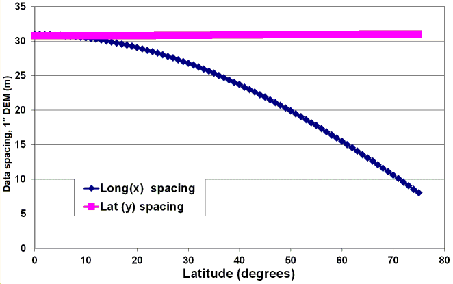
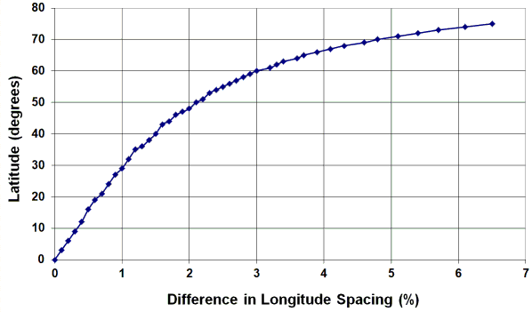
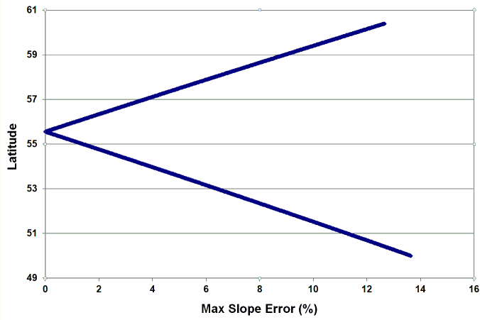
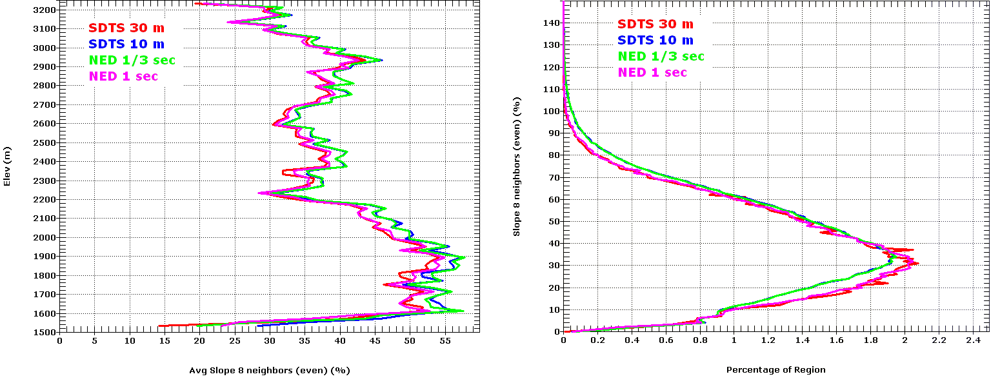

There is a paper in Transactions in GIS (Guth & Kane, 2021) that covers this.
Strobl and others (2021) list software that can correctly do this, including MICRODEM
Slope and aspect computations provide one of the most useful derivative products from digital elevation models (DEMs). Slope and aspect affect mobility and insolation, so users in fields as diverse as the military and ecology care about the results. At least a half dozen distinctly different slope algorithms exist, and a host of studies (e.g. Carter, 1992; Florinsky, 1998; Guth, 1995; Hodgson, 1998; Jones, 1998; Zhou and Liu, 2004a, 2004b; and countless other more recently) have looked at slope algorithms and the effects of data resolution and precision on the computed results. However, except for brief mentions in Guth (1995, p.32; 2009, p.352; 2010), the published discussions implicitly assume a rectangular UTM or UTM-like grid for the DEM because they refer to a single value for data spacing. This paper will explore the implications of that assumption, and its importance when the best medium resolution DEMs (10-100 m post spacing) all use arc-second spacing.
Three common DEMs use geographic coordinates: the U.S Geological Survey’s National Elevation Dataset (USGS NED, Gesch and others, 2002); the National Geospatial-Intelligence Agency’s Digital Terrain Elevation Data (NGA DTED, National Imagery and Mapping Agency, 2000), and the Shuttle Radar Topography Mission (SRTM, Slater and others, 2006). These data sets have horizontal spacing from 30” (DTED-0 and SRTM-30) to 1/9” (limited quantities of NED). Much of this data is freely available on the WWW: 30” and 3” (SRTM) for the entire world, and 1” data for the United States (both SRTM and NED). Free means both easy to obtain and without cost. Because of its ready availability, these DEMs have seen widespread usage world-wide.
All of the global DEMs at 1-3 arc second spacing use geographic coordinates: SRTM (Slater and others, 2006), ASTER, ALOS, TandemX, ASTER, as do many of the USGS 3DEP data (formerly USGS NED, Gesch and others, 2002) and the the National Geospatial-Intelligence Agency’s Digital Terrain Elevation Data (NGA DTED, National Imagery and Mapping Agency, 2000). Much of this data is freely available on the WWW for the entire world. Free means both easy to obtain and without cost. Because of its ready availability, these DEMs have seen widespread usage world-wide.
The traditional approach, typified by a comment about GDAL: "The gdaldem generally assumes that x, y and z units are identical. If x (east-west) and y (north-south) units are identical, but z (elevation) units are different, the scale (-s) option can be used to set the ratio of vertical units to horizontal. For LatLong projections near the equator, where units of latitude and units of longitude are similar, elevation (z) units can be converted to be compatible by using scale=370400 (if elevation is in feet) or scale=111120 (if elevation is in meters). For locations not near the equator, it would be best to reproject your grid using gdalwarp before using gdaldem." (https://gdal.org/programs/gdaldem.html ) ArcGIS long used the same approach (https://desktop.arcgis.com/en/arcmap/10.3/tools/spatial-analyst-toolbox/applying-a-z-factor.htm), but now has a geodetic option that produces correct results. If there were no alternative, accepting the changes in the grid brought about by resampling could be justified. Howerver, if the grid could be used in its native form, that should produce a better result.
Geodetic formulas (Vincenty, 1975) can be used to compute spacing of DEMs with coordinates in latitude and longitude.

Fig. Spacing in meters for a 1” DEM as a function of latitude.

Fig. Percent difference in E-W data spacing from the top to the bottom of a 1º cell of a lat/long DEM. If the DEM covers more than a degree, the result will be the sum of the values.

Fig. Maximum error in the value of the slope computed using a constant E-W data spacing equal to the value in the center of a DEM, for a DEM centered near 55º N
Guth (2010) proposed 5 ways to deal with calculating slope and aspect for arc second DEM
Reproject the DEM to a projected cartesian system, such as UTM. This changes the DEM and cannot improve it, and there is no reason to accept the need for reprojection.
Using a single conversion factor to relate degrees to meters, and ignore the differences between the x and y spacings. This only works very close to the equator. A number of GIS programs in 2020 still offer only this option, and suggest the reprojection option otherwise (or always, since the equator is a rare place to be using a DEM).
Assume the DEM has a rectangular framework, with constant spacing throughout the DEM but a different x and y spacing. This works for small areas, not at high latitude where the x spacing changes rapidly (see figure above)
Assume the DEM has a trapezoidal framework (quasi-rectangular), with constant y spacing throughout the DEM but an x spacing that varies with latitude. This is the optimal solution, and has little performance penalty. When the DEM is opened, the software computes the x spacing at every row of the DEM grid, using geodetic formulae like Vincenty (1975).
Assume the DEM has a trapezoidal framework, with variable x and y spacing that varies with latitude. This is overkill, as the y spacing changes very little.
Variables for arc second DEMs. These are calculated when opening the DEM, along with the projection and datum initialization.
Slope := sqrt(sqr(dzdx) + sqr(dzdy));
GetAspect(dzdx,dzdy) uses an ATAN2 function, and adjusting for geographic compass convention that 0 is north and values increase clockwise (math convention 0 is east, and values increase counterclockwise)
EightNeighborsUnweighted (Evans; 3FD, Heerdegen and Beran, 1982; Sharpnack and Akin, 1969; Horn, 1981; Wood, 1996 (PhD))
dzdx := (zne + ze + zse - zsw - zw - znw) / 6 / UseXSpace; (variable, function of the latitude; compute and store when opening DEM)
dzdy := (znw + zn + zne - zsw - zs - zse) / 6 / AverageYSpace;
FourNeighbors (2FD, Fleming and Hoffer, 1979 (Purdue Laboratory technical report cited in Zhou and Liu, 2004); Zevenbergen and Thorne, 1987; Ritter, 1987)
dzdy := (zn - zs) * 0.5 / AverageYSpace;
dzdx := (ze - zw) * 0.5 / UseXSpace;
EightNeighborsWeighted (3FDWRSD, Horn 1981 method)
dzdy := 0.125 * ((znw + 2 * zn + zne) - (zsw + 2 * zs + zse)) / AverageYSpace;
dzdx := 0.125 * ((zne + 2 * ze + zse) - (znw + 2 * zw + zsw)) / UseXSpace;
EightNeighborsWeightedByDistance (3FDWRD, Third-order Finite Difference Weighted by Reciprocal of Distance; Unwin, 1981)
dzdy := 1 / (4 + 2 * Ö2) * ((znw + Ö2*zn + zne) - (zsw + Ö2*zs + zse)) / AverageYSpace;
dzdx := 1 / (4 + 2 *Ö2) * ((zne + Ö2*ze + zse) - (znw + Ö2*zw + zsw)) / UseXSpace;
FrameFiniteDifference (FFD, Chu and Tsai 1995 Conference Proceedings cited in Zhou and Liu, 2004)
dzdy := (znw - zsw + zne - zse) * 0.25 / AverageYSpace;
dzdx := (zse - zsw + zne - znw) * 0.25 / UseXSpace;
SimpleDifference (SIMPLE-D, Jones 1998)
dzdy := (z - zs) * 0.5 / AverageYSpace;
dzdx := (z - zw) * 0.5 / UseXSpace;
Jones (1998) proposed a “diagonal Ritters” method that uses the four diagonal neighbors to the NE, SE, SW, and NW. While this readily adapts to a square grid, for a rectangular grid the two partial derivatives will not be perpendicular. Because this algorithm provides no significant advantages, I will not try to adapt it for a geographic grid.
Comparing the results of the geographic algorithm with a UTM algorithm is not simple, for several reasons:
We looked at the slope distributions for 4 versions of the Westgard Pass, California quadrangle: two SDTS DEMs with 10 m and 30 m spacing, and two NED DEMs with 1/3” and 1” spacing. The reinterpolation for these DEMs was done by USGS, which uses the SDTS DEMs as the source for NED. The 10 m and 1/3” show slightly steeper slopes, as expected for a DEM with smaller spacing, and generally agree with each other. Likewise the 30 m and 1” DEMs generally agree with each other. In both pairs at comparable scales, the distributions differ.

Figure. Slopes for the Westgard Pass, California 7.5’ quadrangle
Table. Westgard Pass CA 7.5m quad Slope method: 8 neighbors (even)
|
|
NED 1/3 sec |
SDTS 10 m |
NED 1 sec |
SDTS 30 m |
|
Max slope |
231.62% (66.6°) |
233.33% (66.8°) |
157.64% (57.6°) |
154.32% (57.1°) |
|
Average slope |
39.19% (21.4°) |
39.24% (21.4°) |
37.09% (20.3°) |
36.79% (20.2°) |
|
Slope standard deviation |
20.64 |
20.62 |
19.12 |
18.98 |
References Cited
Carter, J.R., 1992, The effect of data precision on the calculation of slope and aspect using gridded DEMs: Cartographica, vol.29, no.1, pp.22-34.
Florinsky, I.V., 1998, Accuracy of local topographic variables derived from digital elevation models: International Journal of Geogaphical Information Science, vol.12, no.1, p.47-61.
Gesch, D.B., Oimoen, M., Greenlee, S., Nelson, C., Steuck, M., and Tyler, D., 2002. The national elevation dataset: Photogrammetric Engineering & Remote Sensing, 68(1):5-11.
Guth, P.L., 1995, Slope and aspect calculations on gridded digital elevation models: Examples from a geomorphometric toolbox for personal computers: Zeitschrift fur Geomorphologie N.F. Supplementband 101, pp.31-52.
Guth, P.L., 2009, Geomorphometry in MICRODEM, In Hengl, T., and Reuter, H.I. (eds), Geomorphometry: concepts, software, applications. Developments in Soil Science Series, Elsevier, ISBN-13: 978-0-12-374345-9, p.351-366.
Guth, P.L., 2010, Slope, Reflectance, and Viewshed Algorithms for Arc-Second Digital Elevation Models: ASPRS 2010 Conference, San Diego, CA, April 26-30, 2010, 11 page paper on Conference CD-ROM.
Guth, P., & Kane, M. (2021). Slope, aspect, and hillshade algorithms for non-square digital elevation models. Transactions in GIS, 25, 2309– 2332. https://doi.org/10.1111/tgis.12852 Paper as submitted in April 2021
Hodgson, M.E., 1995, What cell size does the computed slope/aspect angle represent?: Photogrammetic Engineering & Remote Sensing, vol.61, no.5, pp.513-517.
Hodgson, M.E., 1998, Comparison of angles from surface slope/aspect algorithms: Cartography and Geographic Information Systems, vol.25, no.3, p.173-185.
Jones, K.H., 1998, A comparison of algorithms used to compute hill slope as a property of the DEM: Computers & Geosciences, vol.24, no.4, p.315-324.
National Imagery and Mapping Agency, 2000, Performance specification digital terrain elevation data (DTED): MIL-PRF-89020B, 45 p. Available online at http://www.nga.mil/ast/fm/acq/89020B.pdf.
Slater, J.A., Garvey, G., Johnston, C., Haase, J., Heady, B., Kroenung, G., and Little, J., 2006, The SRTM data “finishing” process and Products: Photogrammetric Engineering & Remote Sensing, 72, 237-247.
Strobl, P. A., Bielski, C., Guth, P. L., Grohmann, C. H., Muller, J.-P., López-Vázquez, C., Gesch, D. B., Amatulli, G., Riazanoff, S., and Carabajal, C.: 2021 THE DIGITAL ELEVATION MODEL INTERCOMPARISON EXPERIMENT DEMIX, A COMMUNITY-BASED APPROACH AT GLOBAL DEM BENCHMARKING, Int. Arch. Photogramm. Remote Sens. Spatial Inf. Sci., XLIII-B4-2021, 395–400, https://doi.org/10.5194/isprs-archives-XLIII-B4-2021-395-2021
Verdin, K.L., Godt, J.W., Funk, C., Pedreros, D., Worstell, B., Verdin, J., 2007, Development of a global slope dataset for estimation of landslide occurrence resulting from earthquakes: U.S. Geological Survey, Open-File Report 2007-1188, 25 p.
Vincenty, T. 1975. Direct and inverse solutions of geodesics on the ellipsoid with application of nested equations. Survey Review. 23(176):88-93.
Zhou, Q., and Liu, X., 2004, Analysis of errors of derived slope and aspect related to DEM data properties: Computers & Geosciences, vol.30, no.4, p.369-378.
Zhou, Q., and Liu, X., 2004, Error analysis on grid-based slope and aspect algorithms: Photogrammetic Engineering & Remote Sensing, vol.70, no.8, p.957-962.
Last revised 1/15/2022